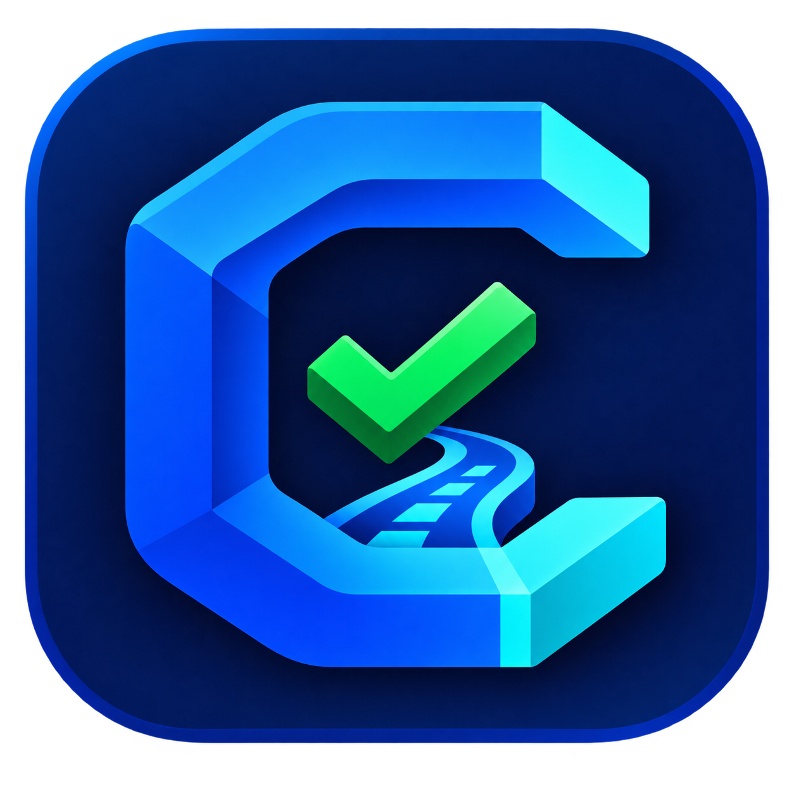

从产品想法到可信交付
没有需求文档也可以开始。描述你的想法，CodeGate 会补齐需求、确定架构、拆解计划，并用真实证据验收结果。
从一句想法开始，通过引导访谈建立完整、可执行、可验收的项目蓝图。
打开项目目录，恢复 CodeGate 进度，或为现有工程建立第一份任务计划。
选择适合的起步方式。产品模式从想法开始；竞赛模式从赛题文档开始。
正在解析赛题资料…
API Key 与订阅凭据使用操作系统安全存储加密，不写入项目目录或诊断文件。
不同服务商和模型价格不同，请按账单填写；两项为 0 时只统计 Token，不估算金额。
客户端只接受由内置公钥签名、且绑定当前安装实例的授权状态。本地开关不能激活付费权益。
订阅状态必须由远程服务签名确认；本机缓存只能在签名载荷规定的离线宽限期内使用。
下载后请核对发布者和安装包签名。Alpha 不会静默安装更新。
这就是需要交给编程 Agent 的完整指令。它由已确认的任务、实现路线和当前计划步骤编译而成。
历史版本不会被删除，可以随时审计之前的决策和 Prompt。